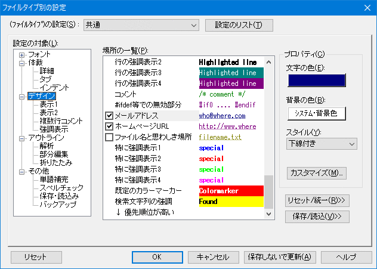
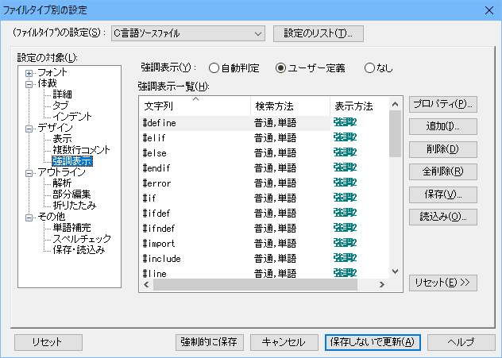

- 秀丸エディタで各種言語のソースファイルを扱っているのですが、コメント行やキーワードを色付けして表示したいのですが、 どうやって設定すればよいですか？。

まず「その他」-「ファイルタイプ別の設定」ダイアログの「デザイン」-「表示」にある各種チェックボックスを見て、 該当する機能があるか確認しましょう。これらのチェックボックスをONにすることで、その機能を利用できます。

実際に表示される色やスタイルは、「その他」-「ファイルタイプ別の設定」ダイアログの「デザイン」で設定します。 「場所の一覧」から、利用する箇所を選択し、ダイアログ右側で色やスタイルを選択して「OK」ボタンを押します。

「表示」タブの中にない文字列や行をカラー表示したい場合は、「その他」-「ファイルタイプ別の設定」ダイアログの 「デザイン」−「強調表示」から、強調表示の機能を使って設定します。 複数行コメントは、言語を指定するか、自分で定義を行います。
